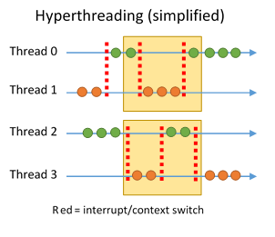

Parallelism
You've probably heard of Moore's law—it states that the number of transistors we can fit on a chip doubles approximately every two years. But your typical computer has not become twice as fast as it was two years ago. This is because our ability to increase the actual speed of processors is becoming quite limited—the clock speed of Intel's high-end i7 processors has only increased about 20% over six years! Adding more transistors to a processor doesn't increase the clock speed—it just adds more capabilities or more parallelism.
So what exactly is parallelism? It's not just a shiny new feature—it represents a different approach to computation. A parallel approach to problem solving considers how a problem can be broken into parts that can be solved (at least somewhat) independently and recombined into the original solution. The technique is a little like the divide-and-conquer approach to recursion, but on a more direct level: ask yourself, how can different parts of the problem be solved at the same time? You'll find that parallelism can be applied to the majority problems, from rendering to sorting to logging to simulation to server architecture.
However, some problems are much more easily parallelized than others. The most straightforward ones are those where the process must do the same operation on a large set of data—simply distribute the data over each parallel path. However, this becomes a lot more complicated when the operations on each part of the set depend on the results of the rest. For example, it's trivial to parallelize the merge sort algorithm. Simply partition the data into however many sets, sort those in parallel, and merge them once sorted. However, parallelizing something like linear programming is much more difficult. It's an open question whether or not all polynomial-time algorithms can be parallelized (NC ?= P), but it is widely accepted that there is a class of problems that are unable to be efficiently parallelized.
Parallelization is only becoming more and more important. Developers of high-performance applications must have a thorough understanding of parallelization and how to realize it in software—threading.

How Threading Works
Before we begin, let me say that this is not a technical lesson on CPU or operating system design—this section is a relatively high-level overview on how parallelization is implemented at a CPU and OS level.
Cores
Modern CPUs have multiple processing cores (2-8). As you might expect, each core can independently process a different stream of processor instructions. Ideally, this would mean that you can simply run two, four, eight, or more copies of your algorithm at once and experience immediate speedup. Unfortunately, it's not that simple.
Processes and Threads
The operating system provides a layer of abstraction between programs and the details of parallelization on the CPU. Typically, a user application is started as a 'process,' which has its own execution state, virtual address space, etc., and is scheduled to run on one core. A process may launch other processes, but for work parallelization, a process spawns one or more 'threads.' A thread represents another execution state run in parallel with the main process, sharing the same context (e.g. globals) and address space. The process that spawned the threads must take care of cleaning them up—and making sure they work together well.
Interrupts
In a multitasking operating system, you obviously can't have one process take up the entirety of CPU time. But, typical code isn't asked to tell the OS when it can spare some time. This is because the OS uses interrupts to schedule the execution of different tasks. Many times a second, the operating system interrupts a process or a thread and switches the core to execute another process in order to keep up behind-the-scenes work and allow all processes sufficient CPU time.
Context Switching
If a CPU needs to constantly respond to interrupts and switch between executing a variety of threads and processes, it needs some way of efficiently switching between the execution states. This process is called context switching. When the execution state needs to be changed, the current context—the register state, the virtual memory table, the stack, possibly the TLB and cache—must be saved and the new state must be swapped in. As you can imagine, this can be a costly operation. Hence operating systems are designed to minimize the amount of context switches needed in normal operation.
Hyperthreading/Simultaneous Multithreading
Hyperthreading (Intel) and Simultaneous Multithreading (AMD) are processor technologies that allow each core to work on two threads at once, more efficiently utilizing processor uptime. Instructions for both threads are queued for evaluation, and the core intelligently switches between the execution states based on idle time—for example, if one thread kicks off a memory access that will take several hundred cycles, the core may use that idle time to execute the other 'hyper' thread. Interrupts are used to synchronize this process as well.
Threading in C++
Back when the first C++ standards were developed, single-core processors ruled the market—the first dual-core CPU was not released until 2001. C++, in fact, did not have a standard model of parallelism until the C++11 standard was ratified in 2011.
Many parallelism libraries and implementations popped up in the absence of a language standard—many developers still use these, or the operating system thread APIs themselves—but the modern C++ standard threading library is now accepted by many C++ programmers.
STL threading is build around the std::thread object, which represents a thread of execution. The thread constructor takes
Threading Problems
Race Conditions
Debugging
Contention
Cache
Threading Solutions
Semaphores
Atomics
Mutexes
Condition Variables
Locks
Sleep Locks
Spinlocks
Threading Optimizations